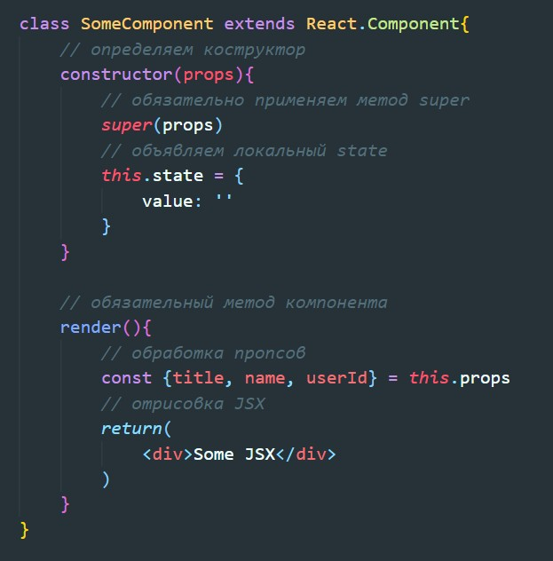

Пример написания классовой компонениы

Если не указывать у компоненты конструктор, то этот конструктор будет унаследован от родительского класса React.Component.
Что бы переопределить construcor мы просто обьявляем его как в обычных ES6 классах
Обьявление локального state лучше всего обьявлять в конструкторе, но и допустимо его объявлять и вне его.
Изменение state происходит при помощи вызова метода setState
Так же метод setState может получить в качестве значению функцию. Этой функции будет передан весь объект локального state. То что вернет эта функция будет записано в локальный state. Вторым аргументом функция получит объект с пропсами.
Так как при использовании методов классовой компоненты внутри JSX которые будут вызываться по какому-либо событию мы можем столкнуться с таким явлением как потеря контекста. Это связано с тем, что при срабатывании события this будет ссылаться не на класс, а на тот объект который вызвал событие (элемент DOM)
Что бы избежать потерятю контекста мы можем либо использовать струлочные функции, либо использовать методы по передаче контекста (bind). Биндить методы следует внутри конструктора.

Решение той же проблемы, но уже с помощью стрелочной функции
Существует три основные стадии жизненного цикла классовой компоненты:
Этот метод будет вызван до рендера компонента. В этом методе лучше всего совершать ассинхронные операции, обращения к API и т.д.
Этот метод будет выполнен сразу после монтирования компонента (после рендера)
Этот метод будет вызван перед демонтированием компонента
Методы обнолвения вызываются каждый раз при обновлении локального state классовой компоненты. Вызов метода setState внутри метода жизненого цикла обновления вызовет бесконечный перерендер.
Основные методы
shouldComponentUpdate(nextProps, nextState) - этот метод способен отменить обновление компоненты, если этот метод вернет значение false. В качестве аргументов принимает новые пропсы и новый state. Можно сравнить эти значения со старыми и тем самым определить, надо ли нам обновлять компоненту. Если метод вернет false то обновление не произойдет
componentWillUpdate(nextProps, nextState) - метод вызывается перед обновлпением компоненты. В качестве аргументов получает новые пропсы и новый state
componentDidUpdate(prevProps, prevState) - метод будет запущен после обновления компонента. В качестве аргументов будут переданы сратые версии пропсов и state которые были до обновления.